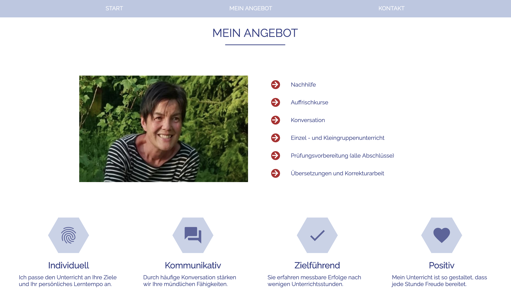

Dieses Spiel habe ich mit Vanilla JavaScript zu Übungszwecken entwickelt. Tic Tac Toe (oder Drei gewinnt) ist ein klassisches, einfaches Zweipersonen-Strategiespiel.
Auf einem quadratischen, 3×3 Felder großen Spielfeld setzen die beiden Spieler abwechselnd ihr Zeichen
(ein Spieler Kreuze, der andere Kreise) in ein freies Feld. Der Spieler,
der als Erster drei Zeichen in eine Zeile, Spalte oder Diagonale setzen kann, gewinnt.
Technologien: HTML5, CSS3, JS

Diese Website soll einer befreundeten Englisch-Nachhilfelehrerin als Werbefläche dienen.
Da die Menge an Informationen überschaubar ist, bietet sich hier eine Single-Page Website an.
Es gab keine Vorgaben für das Design oder den Inhalt - abgesehen von der Angabe ihrer Dienstleistungen,
deswegen konnte ich meine eigenen Vorstellungen und Ideen verwirklichen.
Technologien: HTML5, CSS3, JS, JQuery, Vue.js


Diese Single Page Application - entwickelt mit Firebase und der Vue CLI für die mobile Nutzung hat
Benutzerauthentifizierung und einen Chat in Echtzeit.
Ich habe eine simplere Version während meiner Kurszeit gebaut. Es war Teil des Lehrplans.
Vor Kurzem habe ich nochmal eine verbesserte Version davon gemacht.
Dabei habe ich auf die zwei Vue.js Frameworks Vuetify und Vuex zurückgegriffen, was zu einer noch besseren User
Experience führt.
Der Kunde ist ein Fußballverein, der seinen Mitlgliedern eine Web App zur Verfügung stellen möchte, damit diese
deren Funktionalität auch von unterwegs nutzen können.
Dazu gehört einmal der Chat. Weiterhin soll die App aber auch anstehende Spiele anzeigen und allgemeine
Informationen zugänglich machen.
Die Nutzung des Chats erfordert ein Einloggen. Die anderen Seiten können als Gast benutzt werden.
Ich freue mich, wenn Sie einen Account erstellen und den Chat ausprobieren.
Tipp: Nachdem Sie den Link geklickt haben, bietet Chrome die Möglichkeit den 'Device Mode' auf ein Smartphone
Ihrer Wahl umzustellen.
Technologien: Vue CLI, Vuetify, Vuex, Firebase

Diese Website habe ich für meine Mutter gebaut, die als Psychotherapeutin eine eigene Praxis leitet. Es gibt
zwei Versionen dieser Seite. Die komplexere Version beinhaltet eine Suchfunktion für Psychotherapeuten und ein
Kontaktformular. Die Suchfunktion bietet dem Nutzer die Möglichkeit über die Eingabe einer Adresse Therapeuten
sortiert nach Nähe zu dieser Adresse anzuzeigen.
Hierfür nutze ich die von Google Maps bereitgestellte Distance Matrix API. Die Suche kann aber auch ohne die
Eingabe einer Adresse genutzt werden.
Nutzer können Filter setzen, z.B. welche Art von Therapie oder welche Art der Abrechnung sie bevorzugen.
Da meine Mutter zum heutigen Zeitpunkt weder das Kontaktformular, noch die Therapeutensuche benötigt, befinden
diese sich nicht auf der von meiner Mutter betriebenen Praxis-Website.
Gerne können Sie sich aber hier einen Eindruck von der Therapeutensuche
machen. Dafür nutzen Sie bitte Chrome.
Der folgende Link führt Sie zur Praxis-Website. Diese wird von den meisten Browsern unterstützt.
Technologien: Nuxt.js, Vuetify, Google Maps Distance Matrix API

Die Seite könnte als simples Frontend eines Buchladen dienen. Es handelt sich hierbei um eines meiner frühsten
Projekte. Nutzer können nach Buchtiteln suchen und die Titel umdrehen, um auf der Rückseite mehr Informationen
über das Buch zu finden. Dort befindet sich auch ein Button, der eine Bildergallerie öffnet. Die Seite ist durch
die Integration von Bootstrap voll responsiv. Wie immer ist auch Vue mit im Spiel. Bitte nutzen Sie Firefox oder
Chrome, um die Seite anzuschauen. Die Seite funktioniert eventuell nicht mit anderen Browsern.
Technologien: Vue.js, Bootstrap

TGIF steht für 'Transparency in American Government'.
TGIF hat das Ziel der amerikanischen Öffentlichkeit politisch relevante Daten zugänglich zu machen.
Trotz des recht simplen Designs, erreicht die Seite, dass der Websitenbesucher durch die Nutzung von Filtern und
Tabellen schnell die für ihn interessanten Informationen findet.
Auf meinem Github Account finen Sie zwei Versionen. Einmal habe ich die Seite zu Übungszwecken mit Vanilla
Javascript gebaut und einmal mit der Hilfe von Vue.js. Die Seite ist voll responsiv und funktioniert mit Safari, Firefox und Chrome.
Technologien: Vanilla JS/Vue.js, Bootstrap